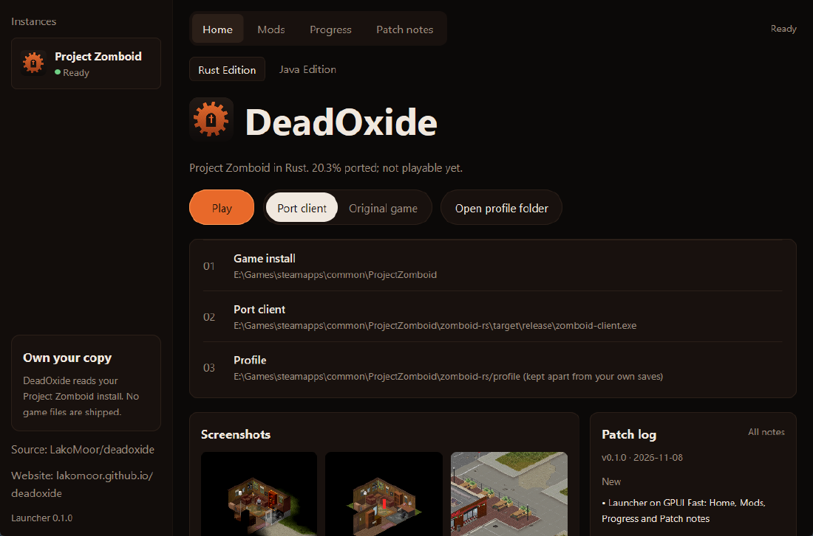

Project Zomboid, rewritten in Rust
A compatible runtime that reads the files of your own copy of the game: maps, tiles, Lua scripts, saves. This page shows honestly how much already works and how each number was checked.
Progress by area
The percentages are subjective estimates based on arbitrary weights, not measured game compatibility. Open an area to see the limited checks and remaining gaps behind each estimate.
Overall 1:1 compatibility is unknown. The estimate does not mean that a fifth of the game is playable: zombies, inventory, crafting, sound and networking are not done. Lua execution currently relies on placeholder Java APIs.
Port vs. the original
Drag the slider. The real game is on the left, the port with the same character position on the right. The number next to each title is the mean pixel difference out of 255; lower is closer.
Screenshots of the original game are shown as evidence for the comparison. The game belongs to The Indie Stone. If you are the rights holder and object, open an issue in the repository and they will be removed.
What it is
The same idea as Horizon, for Project Zomboid: the real game is the specification, and every claim is checked against it.
media/lua runs on Lua 5.1 with PZ-style require, including the real map zone code.Download
You need your own copy of Project Zomboid (build 42.21.0). The launcher finds it automatically or via PZ_ROOT.

git clone https://github.com/deadoxide-rust/deadoxide cd deadoxide cargo run --release -p deadoxide-launcher
Patch notes
Mod catalog
Only mods published with the author's permission are listed. The launcher downloads the archive, checks the sha256 from the catalog and extracts it into the game's mods folder. To add yours, open a pull request against registry/index.json.